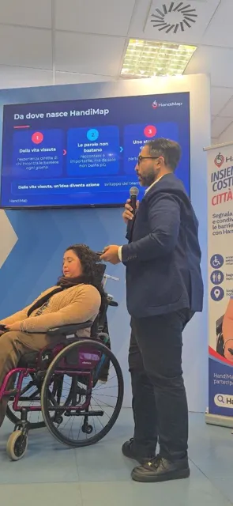
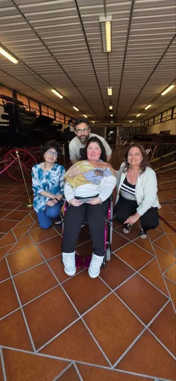

Incontri ed eventi
Dove Manilla ha raccontato HandiMap
-

Fiera EST – Napoli Innovation Festival Fabbrica Italiana dell'Innovazione, Via Ponte dei Granili 32, Napoli ❤️♿ Da un'idea nata dalla mia esperienza a un progetto che continua a crescere. Felice di aver raccontato HandiMap.it insieme ad Arcangelo a EST – Napoli Innovation Festival. 💙 Guarda le foto → -

HandiMap al Centro Regionale di Incremento Ippico Centro Regionale di Incremento Ippico, Santa Maria Capua Vetere 30 maggio 2026 un evento ✨ Ieri abbiamo vissuto una mattinata che porteremo a lungo nel cuore. ✨ Siamo stati accolti presso il Centro Regionale di Incremento Ippico di Santa Maria Capua Vetere dalla Dottoressa Rinaldi, che desideriamo ringraziare sinceramente per la disponibilità, l’attenzione e il tempo prezioso che ci ha dedicato. 🌷 Guarda le foto →